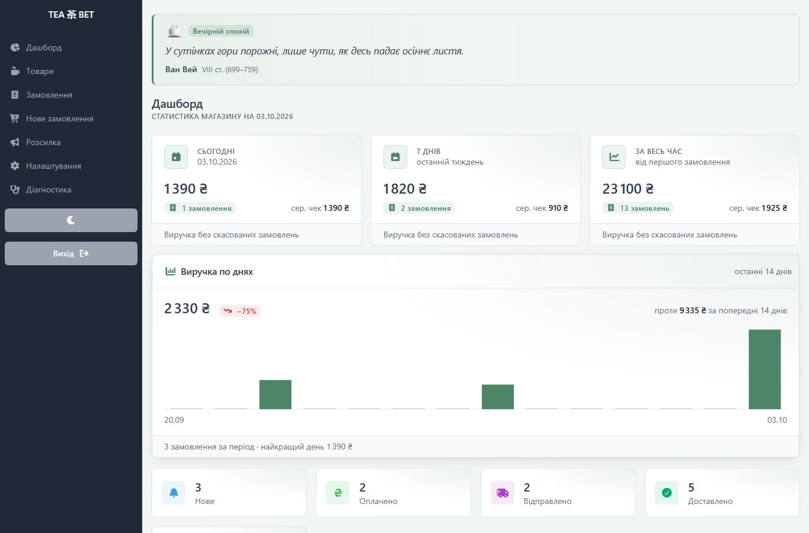

FEATURED PROJECT / 01↗


TEA BET · Telegram commerce
A Mini App, bot and admin panel for the n1kotea tea shop.
Explore the project ↗UKRAINE / REMOTE
I have 1.5+ years of commercial experience building FastAPI APIs and asynchronous Telegram commerce workflows. I also built a booking CRM with Django.
FULL-TIME / PROJECT WORK

A Mini App, bot and admin panel for the n1kotea tea shop.
Explore the project ↗SELECTED WORK
01 — 0301 / CLIENT PROJECT
A production Telegram shop with 500+ products, a shared bot and Mini App cart, and a web admin panel for orders and inventory.
Give customers a convenient storefront and checkout, and the manager tools to handle orders and products.
Migrated the production database from SQLite to PostgreSQL. Checkout validates stock and records the result in one PostgreSQL transaction. A retry with the same key and payload returns the original order. Redis caches the result.
Celery Beat polling for Nova Poshta delivery updates, Redis broker, bounded retries.
The shop launched on July 9 and accepts real orders. Customers receive delivery updates for waybills entered by the manager.
TRY IT / MINI APP
Choose a tea and place a demo order. It will appear in the admin panel on this page.
Where the order lands ↓The catalogue snapshot is updated periodically. Demo orders stay in your browser.
NOW, THE MANAGER’S SIDE
Try the sample order or place your own demo order in the storefront above.
A test waybill is already filled in; you can change it.
Try the sample order or place your own demo order in the storefront above.
The admin is recreated in the browser from the production system. Nova Poshta tracking and messages are simulated.
02 / REFERENCE IMPLEMENTATION
A guest portal and occupancy calendar for reception staff. The Django backend validates rates and availability and records reservation status changes.
The confirmation transaction locks the apartment row with SELECT FOR UPDATE. A test using two PostgreSQL connections checks that only one confirmation succeeds for the last available apartment.
03 / CLIENT PROJECT
An online store for a family apiary, built from the owner’s Instagram shop. The store is live and accepting orders.
A catalogue, product pages, variants and cart help customers choose honey and place orders.
A server-side TypeScript endpoint validates the cart, recalculates totals from the catalogue, and sends orders to the owner via Telegram.
HOW I WORK
Behind the interface: validated data, reliable checkout and a way back if a release needs to be undone.
The server verifies the Telegram initData signature.
Prices and stock are checked in a transaction; repeated submission does not create a duplicate.
TEA BET includes a database backup, pinned image and rollback script.
Local offline TEA BET run on synthetic data, October 6, 2026: 661 pytest tests and 1,116 smoke checks passed. Verification notes ↗
WORK TOGETHER
I can join a team or take on a clearly scoped project.
FastAPI and Django APIs, checkout and reservation logic, automated tests, and Docker releases.
Bots, Mini Apps, admin panels, catalogues, notifications and manager workflows.
My internal Telegram B2B agent supports lead research and outreach drafting with Python and LLM APIs on an Ubuntu VPS managed by systemd.
NEXT STEP
Remote from Ukraine. Open to full-time roles and project work.
Telegram ↗